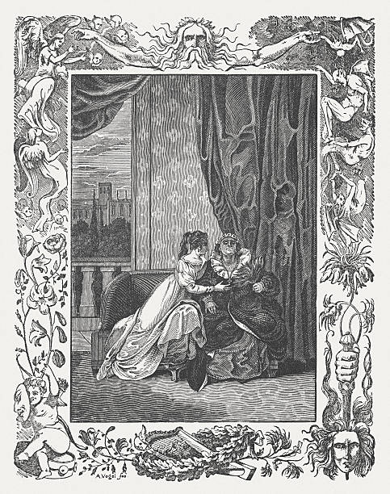

Romeo y Julieta es quizás una de las obras de amor más importantes de todos los tiempos. Son muchas las lecciones que deja a los lectores, como el peso social que pueden tener los prejuicios y rivalidades frente a la realización plena del amor. Los protagonistas se conocen en un baile familiar de los Capuleto, en el que Romeo y sus amigos se cuelan, a pesar del peligro que corren y de que el rey de la ciudad ha decretado una frágil tregua entre las familias. Y tan pronto como bailan, Romeo y Julieta quedan perdidamente enamorados el uno del otro. Cuando Romeo y Julieta se conocen fue amor a primera vista. El problema es que ella era una Capuleto y él un Montesco, apellidos que estaban marcados por el conflicto entre las dos familias. Siendo enemigos naturales estaban destinados a vivir un amor secreto. Un plan para huir y una serie de hechos desafortunados llevan a esta joven pareja de amantes a un final trágico que ha trascendido el tiempo y el espacio.
La obra “Romeo y Julieta”, escrita por William Shakespeare, es una de las tragedias más conocidas en la literatura universal. Publicada por primera vez en 1597, esta obra maestra ha perdurado a lo largo de los siglos, cautivando a generaciones con su historia de amor prohibido y las consecuencias desgarradoras de la rivalidad entre familias. A través de sus personajes principales, Shakespeare explora temas universales como el destino, el amor, el honor y la tragedia, dejando una marca indeleble en la cultura y el pensamiento humanos.
La trama de “Romeo y Julieta” se desarrolla en la ciudad italiana de Verona, donde dos familias, los Montesco y los Capuleto, están inmersas en un conflicto ancestral. En medio de este enfrentamiento, surge un amor apasionado entre Romeo, hijo de los Montesco, y Julieta, hija de los Capuleto. A través de su romance clandestino, Shakespeare examina la fragilidad del amor en un mundo marcado por el odio y la violencia.
Sabemos que existe una fuerte enemistad entre la familia Montesco y la familia Capuleto. Romeo en un principio se encuentra despechado por una mujer: Rosalina, pero más adelante, al asistir a la fiesta de los Capuleto (disfrazado), descubre su verdadero amor: Julieta Capuleto. Ambos jóvenes se atraen al momento de verse, es algo instantáneo, se enamoran perdidamente uno del otro y hasta toman la apresurada decisión de casarse, cosa que logran racias a la ayuda de Fray Lorenzo.
La obra está imbuida de una atmósfera trágica desde el principio, cuando el destino parece conspirar contra los amantes. A pesar de sus esfuerzos por estar juntos, eventos desafortunados y malentendidos conducen inevitablemente a su trágico destino. La muerte de Mercucio y Teobaldo, seguida por la condena de destierro de Romeo, actúan como catalizadores que aceleran la escalada hacia el desenlace fatal.
El desenlace final, donde Romeo y Julieta eligen la muerte sobre la separación, encapsula la intensidad de su amor y la desesperación que sienten al enfrentarse a un mundo que no puede aceptar su unión. La tragedia no solo yace en la muerte de los amantes, sino también en la revelación tardía de la reconciliación entre las familias, que llega demasiado tarde para evitar la tragedia